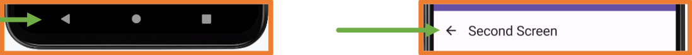

With the traditional Android (Views) programming, each screen of the application was implemented in a
different Activity.
This required the use of navigation graphs, instructions for starting Activities,
creating elements to send information to the new window, and to receive information upon closing the window.
With Jetpack Compose, the entire navigation process is simplified because the structure of a
Compose-developed application is based on a Single Activity.
Single Activity means that there is only one Activity managing all interface elements,
which are divided into different Compose components in Jetpack Compose.
From this point on, it is very important to have all your application code organized into folders.
To do this, you can create a folder named screens inside ui where you place the different components of each screen.
Inside the screens folder, you can directly keep the .kt files for each screen, or you can create new folders if each screen is composed of multiple .kt files.
The example to be studied is an application with two screens.
The first screen will show a TextField for entering a name and a button to navigate to the second screen while sending it the name.
The second screen will display the received name and a button to go back.
To implement navigation with Jetpack Compose, you must add the following dependency:
libs.versions.toml
[version] section
navigation = "2.8.5"
serialization = "1.6.3"
[libraries] section
androidx-navigation = { group = "androidx.navigation", name = "navigation-compose", version.ref="navigation" }
kotlinx-serialization-json = { module = "org.jetbrains.kotlinx:kotlinx-serialization-json", version.ref = "serialization"}
[plugins] section.
kotlin-serialization = { id = "org.jetbrains.kotlin.plugin.serialization", version.ref = "kotlin" }
Navigation in Jetpack Compose requires two elements:
NavController: it controls the navigation.
NavHost: it displays each of the screens to which navigation occurs.
The element NavHost defines the different screens to which you can navigate
and also needs the NavController.
The first step is to create a package named navigation, and inside it, create a file called Screens.kt
which will contain a reference to each screen of the application in order to keep them centralized.
// If the screen DOES NOT need to receive values, it is defined with: object
@Serializable
object First
// If the screen NEEDS to receive values, it is defined with: data class
@Serializable
data class Second(
// mandatory parameter
val name: String,
// optional parameter
val age: Int = 0
)
If the screen does not need to receive values, define the route with: object
If the screen needs to receive values, define the route with: data class
Optional parameters are indicated by assigning them a default value.
Next, within the navigation folder, create a file that contains a
@Composable component named Navigation.kt.
In this file, you define the NavController and the NavHost.
@Composable
fun Navigation() {
// Constant to manage the state, must be propagated across all screens
val navController = rememberNavController()
// Element that knows the different screens and which is the first to launch
NavHost(
navController = navController,
startDestination = First // Route where the application starts
) {
// Definition of the first screen
composable<First> {
FirstScreen(navController)
}
// Definition of the second screen
composable<Second> {
// Parameters are obtained from the route to use them when loading the screen
val args = it.toRoute<Second>()
SecondScreen(navController, args.name, args.age)
}
}
}
In the example, two screens have been defined:
The first will load the FirstScreen component that will receive the NavController object.
The second will load the SecondScreen component that will receive the NavController object and also a String argument.
This argument must be specified when you want to navigate to this screen.
The NavController object must be passed to all components in which interacting with them will cause a screen change (navigation).
Since there will now be several screens and all will be managed by the Navigation component,
in the MainActivity file, it must be indicated that this component is loaded.
With all this, the navigation system is created; the only thing left is to create the content for the app's screens.
Inside the screens folder, create a new package called layout
and inside it, create a new Kotlin file called AppScaffold.kt.
This file will contain the structure for all the app's screens.
This component receives:
The title to display in the TopBar.
The NavController to allow navigation from the TopBar.
A lambda function for the content of the Scaffold,
which returns the paddingValues parameter that should always be assigned to the first component of a Scaffold.
As seen in AppScaffold, using navController.popStackBack
it is indicated that we should go to the previous screen in the screen stack.
The navController.navigateUp instruction performs the same action.
FirstScreen
@Composable
fun FirstScreen(navController: NavController) {
AppScaffold(
title = "First Screen",
navController = navController
) { paddingValues ->
Column(
modifier = Modifier.fillMaxSize().padding(paddingValues),
verticalArrangement = Arrangement.Center,
horizontalAlignment = Alignment.CenterHorizontally
) {
Text(text = "App for navigation")
Spacer(modifier = Modifier.height(20.dp))
var nameState by rememberSaveable { mutableStateOf("")}
TextField(
value = nameState,
onValueChange = { nameState = it },
placeholder = { Text(text = "Type your name") }
)
Spacer(modifier = Modifier.height(20.dp))
var ageState by rememberSaveable { mutableStateOf("")}
TextField(
value = ageState,
onValueChange = { ageState = it },
placeholder = { Text(text = "Type your age") }
)
Spacer(modifier = Modifier.height(20.dp))
Button(
onClick = {
navController.navigate(
Second(
name = nameState,
age = ageState.toIntOrNull() ?: 0
)
)
}
) {
Text(text = "Move next window")
}
}
}
}
Using navController.navigate, it is indicated that we should go to the Second screen, passing the necessary parameters.
Since ageState is a state variable that stores an integer value, it tries to convert it to Int, and
if the conversion fails, it will use the value 0.
SecondScreen
@Composable
fun SecondScreen(navController: NavController, name: String, age: Int = 0) {
AppScaffold(
title = "Second Screen",
navController = navController
) { paddingValues ->
Column(
modifier = Modifier
.fillMaxSize()
.padding(paddingValues),
verticalArrangement = Arrangement.Center,
horizontalAlignment = Alignment.CenterHorizontally
) {
Text(text = "I've navigated")
Text(text = "Data entered:")
//Text(text = "Name: ${if (name.isNotEmpty()) name else "No input"}")
Text(text = "Name: ${name.ifEmpty { "No input" }}")
Text(text = "Age: ${if (age != 0) age else "No input"}")
Button(onClick = {
// navController.popBackStack()
// Goes to the indicated one (if it is the previous one it will be a new instance: empty fields)
// Also, cleans the stack
navController.navigate(First) {
popUpTo<First> {
inclusive = true
}
}
// navController.navigateUp()
}) {
Text(text = "Go back")
}
}
}
}
Since the age parameter has been defined as optional in the route,
in the screen component, a default value must be assigned in case the screen is navigated to without that parameter being specified.
In Android, when navigating between screens,
they are accumulated in the screen stack, which is why the popBackStack function is used to return to the previous screen.
If you navigate directly to First, that screen would be added again to the stack.
If you want to navigate to a specific screen, indicating that intermediate screens should be removed, you should do it as follows:
The inclusive parameter indicates that the screen you navigate to should be removed so that it doesn't remain duplicated.
BackHandler
Android devices generally have a button that takes you back to the previous screen. Additionally, apps sometimes show
a back arrow in the top bar to do the same thing.

These buttons always execute navController.popBackStack().
This action always returns to the previous screen, whether it’s from your app or from somewhere else; in fact, if
you just opened one operation from the home screen, pressing the back arrow would bring you back to the home
screen.
You can change this behavior by using the BackHandler component.
If you set the property enabled = true, the back buttons will remain disabled all the
time.
It’s not advisable to keep enabled always as true, because in that case you’d never be
able to exit the application.
Typically, you’ll link enabled to a state variable:
Activity 1:
Study of the example Navigation application.
Here you have the link to github with the complete example
Adaptive Layouts
Mobile devices come in different screen sizes and resolutions.
If we know the screen size and orientation, we can decide which components to display on the screen.
For example, master-detail applications might show certain components or others depending on the width.
There are several ways to determine the screen size and orientation.
The screen dimensions and orientation can also be obtained using the LocalConfiguration class.
Dimensions in Dp:
Screen orientation:
BoxWithConstraints Component
Another option is to use the BoxWithConstraints Layout component, which automatically injects the dimensions.
If this method is used outside of a Scaffold, higher values are obtained, as it includes margins and the top and bottom status bars in the dimensions.
Once the screen size/orientation is known, different components can be loaded accordingly.
For example:
Activity 2:
Modify the DragonBall practice app so that it has an adaptive design. That is, it displays as it is in landscape mode,
but in portrait mode it shows separate screens: one with the list and another with the detail.
SplashScreen
A Splash Screen is a window that appears when an Activity of an application or a game is launched,
provided that the associated process of the application is not running.
By default, the Splash Screen of an application consists of the application icon on a white/black background
(depending on the activated mode).
The Splash Screen is a good resource to avoid the blank screen while the application opens and
loads necessary data for the app.
Android Studio offers a library that allows you to customize the default Splash Screen, but its configuration is quite complex.
If the application needs to load a lot of data, the default Splash Screen might not last long enough.
Thanks to Jetpack Compose and the Single Activity technique, a second Splash Screen can be created to load the data with it.
The process of showing the Splash Screen consists of the following sequence:
Entry animation: the Splash Screen is shown. Android controls this animation and it cannot be customized.
Splash Screen: the content of the Splash Screen is displayed, automatically animating the image if it is an animated vector image (xml) and the Android version is 12 or higher.
Exit animation: the way the Splash Screen disappears.
By default, it is controlled by the system, but it can be customized. If customized, it is mandatory to manually remove the Splash Screen
when the animation finishes. The image and/or the Splash Screen itself can be animated in this step.
In newer versions postSplashScreenTheme is not necessary
The theme to load after finishing is the one already existing in res/values/themes.xml.
In the manifest file, it should be indicated that the Activity will use the Splash Screen defined in the new theme:
Finally, it should be indicated in the Kotlin file MainActivity.kt of the activity that the Splash Screen will be used:
If, after the Splash Screen finishes, the screen stays blank until the main screen of the app appears,
the following code should be added to the previous line:
With the steps above, the Splash Screen will work correctly on all devices.
Starting from Android 12 (API 31), new features are introduced for the Splash Screen:
Animated images (only vector graphics in xml format)
Display a secondary image (branding image) at the bottom.
Splash Screen exit animation.
In newer versions, installSplashScreen() function is not needed. You shouldn't put it in. It's in the Android core and does it on its own.
In the documentation
you can find all the information and examples for these features.
SplashScreen with Jetpack Compose
With Jetpack Compose navigation, implementing a Splash Screen is very simple.
Create a route for the Splash Screen in Routes.kt.
Add the Splash Screen route to the Navigation.kt file.
Indicate in the NavHost (Navigation.kt) that the Splash Screen is the "startDestination".
Create a @Composable component with the Splash Screen content.
Indicate in the @Composable of the Splash Screen that after it finishes loading, it should navigate to the next screen.
The LaunchedEffect is used (it will be studied later) to run that code in the background (coroutine).
@Composable
fun SplashScreen(navController: NavHostController) {
LaunchedEffect(key1 = true) { // this: CoroutineScope
delay(timeMillis = 5000) //Change this for real instructions, getting data from API, BDD, etc
navController.popBackStack() // Prevent going back to the Splash Screen
navController.navigate(Routes.MainScreen.route)
}
Splash()
}
@Composable
fun Splash() {
Column(
modifier = Modifier.fillMaxSize(),
horizontalAlignment = Alignment.CenterHorizontally,
verticalArrangement = Arrangement.Center
) { // this: ColumnScope
Image(
painter = painterResource(id = R.drawable.logo),
contentDescription = "logo",
modifier = Modifier.size(200.dp, 200.dp)
)
Text(
text = "Welcomed",
fontSize = 30.sp,
fontWeight = FontWeight.Bold
)
}
}
In a real application, instead of the delay(5000) instruction, the code that retrieves the information needed by the application should be written,
for example, from a database or an API.
Very attractive Splash Screens can be designed using the animations that will be covered at the end of this unit.
By adding a Splash Screen with Jetpack Compose, the application opening flow will be as follows:
Default Splash Screen (with the application icon).
Jetpack Compose Splash Screen.
Main screen.
Using this technique, you take advantage of the design ease that Jetpack Compose offers.
Additionally, the Jetpack Compose Splash Screen can be started to initially display the app icon in the center, providing continuity between the two Splash Screens.
Here, there is an example of a combined SplashScreen
Modify the DragonBall application to include a SplashScreen. This will display the dragon ball from the app and the text "DragonBall" for 3 seconds.
Here is the Github link with the Dragon Ball app updated for Navigation, adapted to Portrait and Landscape, and with a Splash Screen.
Onboarding
Onboarding refers to a set of screens displayed in the app as an introduction to how it works.
Via Onboarding, you can quickly explain to the user how the app works.
You can also request data from the user, for example, in Telegram/WhatsApp, the Onboarding requests the phone number, the confirmation code, and the username.
There are many techniques for Onboarding. In some cases it’s mandatory to go through all steps, in others you can skip them and go directly into the main application.
The Onboarding should only be shown the first time you run the app after installing it.
If, in Onboarding, mandatory data is requested for the app to function, the Onboarding will continue to be displayed until that data is obtained.
In apps where you can log out, the Onboarding will be displayed each time the current user logs out.
You can find numerous online resources and best practices on designing a good Onboarding process.
Below are a couple of examples:
Creating Onboarding with Jetpack Compose and Navigation is quite simple using navigation. You can choose one of these approaches:
Create as many Screens as there are onboarding pages and control navigation among them.
Create a single screen with a HorizontalPager (if mandatory data is collected, you must control navigation between pages with buttons).
When Onboarding is finished, you must navigate to a screen that already shows the app’s functionality.
To show the Onboarding only the first time you launch the app (or whenever it’s needed—for example, if the user logs out), you must store that information somehow.
In UD10 Persistence, you’ll learn how to save app preferences, allowing you to store this data.
Themes
In the previous unit, we studied how to centralize values and thus how to create a color palette within the res -> values -> colors.xml file that can be used to build a theme for the entire application.
Although that file is fully functional, it does not follow the foundations of Material Design and should be avoided.
Within the same folder is the file themes.xml, which specifies the base theme on which the Jetpack Compose theme is built.
When creating a project in Android Studio, by default it creates its own Jetpack Compose theme based on Material Design, which you can customize.
The files for this theme can be found in the ui --> theme folder.
From now on, to configure the application’s theme, we will use these files.
The theme is defined in the file Theme.kt. Its content is as follows:
The Theme.kt is divided into three subsystems:
Color.kt: color palette
Type.kt: text typography
Shape.kt: shapes (this file is not created by default)
Whenever you make any changes to any of these three files, you will see them immediately in the Jetpack Compose application components that implement Material3.
Color Palette
This palette consists of 6 key colors. The following image shows the 5 key colors of the default Material 3 theme plus an additional key color for errors.
Color palette
Each color must be defined in 13 different tones, from 0 (black) to 100 (white).
For each of the 6 key colors, you must choose 4 color shades, which are the ones that will be specified in the app theme.
The roles for the Primary, Secondary, and Tertiary colors are:
Primary: The base color used for main components, such as prominent buttons, active states, and elevated surface tone.
Secondary: Used for less prominent UI components, such as filter chips.
Tertiary: Used to provide contrasts. You can find more information on when to use each key color in the official Material documentation:
Color roles
Color roles
Meaning of the shade names:
More information on when to use each key color can be found in the official Material documentation:
Color roles.
Using the Material Theme Colors
To use the Material-defined colors, whether it’s the default theme or a customized palette, you must use the class MaterialTheme.
Modifying the Color Palette
Choosing a color palette is critical in an application, requiring thorough study.
If you have enough design knowledge, you can manually create the palette.
In this tool, you select the key colors you want, and it automatically generates the required shades and shows you how they will look in the application.
When exporting the theme created in the web application, a compressed file material-theme.zip is obtained with the following files:
Color.kt:
This should be replaced with the one from the project by indicating the correct package.
Theme.kt:
This should be replaced with the one from the project by indicating the correct package, and at the end of the file, the correct project Theme name must be indicated.
Type.kt:
This should be replaced with the one from the project by indicating the correct package.
If fonts were selected, the content of the res folder from the zip must be copied to the res folder of the project in Android Studio and the dependencies should be imported.
Once you have decided on the color palette, you must place it in the app within the file Color.kt.
By default, this file has some color definitions as examples.
Colores.kt
The best approach is to define all palette colors for both light and dark modes in the manner in which you will later use them in the application’s theme.
Below are all the required variables to modify the entire default Material 3 color palette.
Once you have added the entire palette, you must specify that palette in the application’s theme color subsystem in the file Theme.kt.
Theme.kt
Dynamic Color
A very important feature in Material 3 is Dynamic Color, an algorithm that generates derived colors from the device’s wallpaper.
By default, Android Studio projects with Jetpack Compose enable Dynamic Color if the device’s Android version supports it. You can see this in the Theme.kt file:
If you want to disable it, just remove those lines of code that enable it.
Typography
Material 3 defines five different typography roles, each with three sizes:
The Android operating system offers two bars by default in apps:
The status bar (top).
The navigation bar (bottom).
The style of these bars is configured based on the application’s theme colors,
but since these bars are provided by the operating system, you must follow a specific procedure if you want to style them independently of the theme.
By default, Jetpack Compose configures the status bar (top) and the navigation bar (bottom) to be transparent.
This action is performed through the enableEdgeToEdge function, which can be seen in the onCreate function of the MainActivity file.
The enableEdgeToEdge function has been introduced in the latest versions of Android Studio and
it will likely have modifications in the future to allow for more customization.
This function supports two parameters statusBarStyle and navigationBarStyle
that allow changing the color of the bars and the style of the buttons.
Status Bar and Navigation Bar Colors
SystemBarStyle.light:
Indicates that the color of the bar should be light to contrast with the icons, which will automatically be configured to a dark color.
The first parameter is the color to apply to the bar.
The second parameter should be a dark color in case the device does not have dark mode.
SystemBarStyle.dark:
Indicates that the color of the bar should be dark to contrast with the icons, which will automatically be configured to a dark color.
The parameter is the color to apply to the bar.
The status bar, the navigation bar, or both can be hidden at once.
To do this, within the onCreate function of the MainActivity file, the following instructions can be added:
// Controls the visibility of system bars
val windowInsetsController = WindowInsetsControllerCompat(window, window.decorView)
// Hides both the status bar and navigation bar at once
windowInsetsController.hide(WindowInsetsCompat.Type.systemBars())
// Hides the status bar (top)
windowInsetsController.hide(WindowInsetsCompat.Type.statusBars())
// Hides the navigation bar (bottom)
windowInsetsController.hide(WindowInsetsCompat.Type.navigationBars())
Below are a few examples of how to use these animation APIs. If more information is needed on how they work—for instance, changing the animation type or duration—please refer to the documentation.
animate*AsState
This API can create an animation between two values, with Android handling the animation from the initial value to the final value. The * can be replaced by any of the following types:
Int
Float
Color
Dp
Size
Offset
Rect
IntOffset
IntSize
var animateColor by rememberSaveable {
mutableStateOf(false)
}
val backgroundColor by animateColorAsState(
if (animateColor) Color(0xFFFFA020) else Color(0xFF40C0FF)
)
Column(
modifier = Modifier.fillMaxSize(),
verticalArrangement = Arrangement.Center,
horizontalAlignment = Alignment.CenterHorizontally
) {
Button(onClick = { animateColor = !animateColor }) {
Text(text = "Change Color")
}
Spacer(modifier = Modifier.height(10.dp))
Text(
text = "Hello Rick!",
fontWeight = FontWeight.Bold,
modifier = Modifier
.background(backgroundColor)
.padding(20.dp)
)
}
Android will animate the component when its size changes due to a change in its content.
var expanded by rememberSaveable {
mutableStateOf(false)
}
Column(
verticalArrangement = Arrangement.Top,
modifier = Modifier
.fillMaxWidth()
.wrapContentHeight()
.animateContentSize(animationSpec = tween(
durationMillis = 2000,
easing = LinearEasing
))
.background(Color(0xFFFFA0C0))
//.padding(10.dp)
) {
Row(
modifier = Modifier
.background(Color.White)
.fillMaxWidth(),
horizontalArrangement = Arrangement.SpaceBetween,
verticalAlignment = Alignment.CenterVertically
) {
Text(text = "Son Goku")
TextButton(onClick = {
expanded = !expanded
}) {
Text(text = if(expanded) "Less." else "Read more...")
}
}
Text(text = "Hey!")
if(expanded){
Spacer(modifier = Modifier.height(8.dp))
Text(
text = "Child Goku: A little one with a tail who has an innate ability to transform " +
"into a giant ape lacking reasoning skills and destroys everything in his path. " +
"His main defeated enemies were Pilaf, the Red Army soldiers, and the well-known " +
"Piccolo Daimao.\n\n" +
"Young Goku: Milk, a maiden heiress to the throne of a small town, marries Goku " +
"and they have their first son, Gohan, together. However, after a few years, his " +
"brother Raditz arrives on Earth with the sole mission of completely colonizing it, " +
"and a group of warriors unites to stop him. Goku loses his life for the first time " +
"and discovers the Kingdom of the Heavens.\n\n" +
"Adult Goku: Perhaps the most important moment in the history of this alien. Over " +
"about 10 years, Goku gains the superpower to transform into Super Saiyan 1, 2, 3, " +
"and the God forms.\n\n" +
"After the arrival of Beerus, the God of Destruction, Kakarot’s transformation " +
"rituals go beyond the mystical, reaching a power that measures up to the very " +
"creator of the entire universe.",
textAlign = TextAlign.Justify
)
}
}
Customizing animations
Default animations come configured in a particular way, but they can be customized.
animationSpec parameter
This parameter can be used in:
animate*AsState, Crossfade, and Modifier.animateContentSize
fadeX, slideX, scaleX,
expandX, and shrinkX
allowed in the transitionSpec parameter of AnimatedContent.
fadeX, slideX, scaleX,
expandX, and shrinkX
allowed in the enter and exit parameters of AnimatedContent.
All the details about customizing animations can be found in the
documentation.